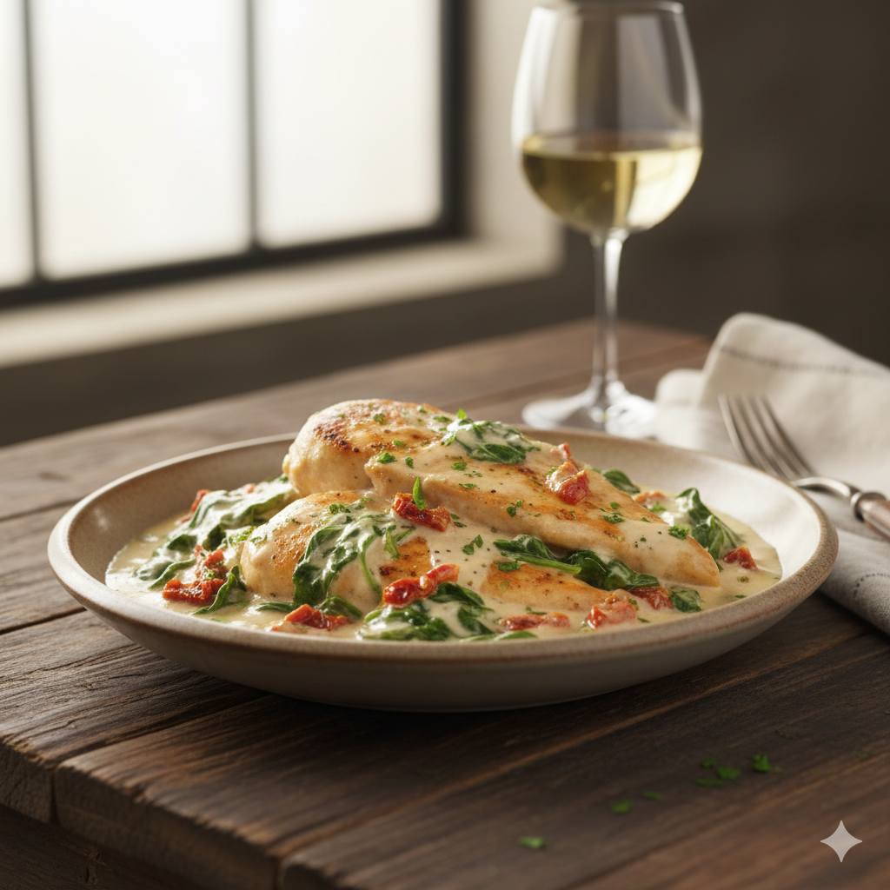

Creamy Garlic Tuscan Chicken
Home

Description
Tuscan Chicken is a restaurant-quality meal that brings the flavors of central Italy to your kitchen. This dish features pan-seared chicken breasts smothered in a luxurious, silky cream sauce made with heavy cream, savory garlic, and freshly grated Parmesan.
What makes this recipe truly stand out are the sun-dried tomatoes and fresh baby spinach. The tomatoes provide a concentrated, tangy sweetness that cuts through the richness of the cream, while the spinach adds a vibrant color and earthy balance. It is a one-pan wonder that looks elegant and tastes incredibly indulgent.
Ingredients
- 2 large chicken breasts, halved lengthwise
- 1 tsp paprika
- 2 tbsp olive oil
- 3 cloves garlic, minced
- 1/2 cup sun-dried tomatoes (chopped)
- 2 cups fresh baby spinach
- 1 cup heavy cream
- 1/2 cup grated Parmesan cheese
- 1 tsp dried Italian seasoning
- Salt and black pepper to taste
Steps
- Season and Sear: Rub the chicken with paprika, salt, and pepper. Heat olive oil in a large skillet over medium-high heat and sear the chicken until golden and cooked through (about 5–7 minutes per side). Remove chicken from the pan and set aside.
- Sauté Aromatics: In the same skillet, add the minced garlic and sun-dried tomatoes. Sauté for 1–2 minutes until fragrant.
- Build the Sauce: Lower the heat to medium and pour in the heavy cream and Italian seasoning. Bring to a gentle simmer.
- Thicken with Cheese: Stir in the Parmesan cheese and let it melt into the cream. Add the baby spinach and cook until the leaves have wilted.
- Combine: Return the chicken breasts to the skillet, spooning the sauce over them. Let everything simmer together for 2–3 minutes to marry the flavors.
- Serve: Pair this dish immediately with pasta, crusty bread, or over a bed of mashed potatoes.